나폴레옹 시대에도 청량음료가 있었을까 ?
게시: 2018-07-26T06:30:00+09:00
요즘 기후 온난화의 위기를 다들 온몸으로 느끼시고 계실 겁니다. 전에 제가 조선시대 임금님보다도 요즘 서민이 더 호화로운 삶을 사는 편이라고 말씀드렸는데요, 미국이나 유럽 사회에서도 1950년대의 서민들에게 19세기 말의 귀족들의 생활을 하게 한다면 불편해서 못 견딜 것이라고 하더군요. 이건 특히 여름철에 그렇습니다. 전기와 냉장고, 에어컨이 정말 대단한 차이를 만들어내거든요. 이렇게 날씨가 더워지면 뭔가 찬 음료수를 찾기 마련입니다. 그런데, 전기도 냉장고도 없던 나폴레옹 시대, 유럽인들은 여름철에 어떤 음료를 주로 마셨을까요 ?
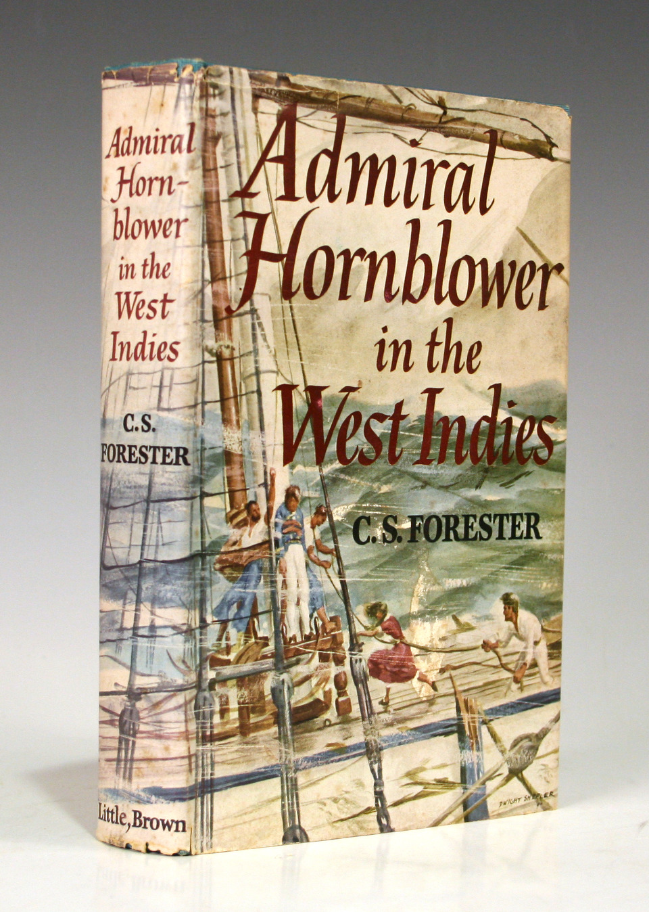
Hornblower in the West Indies by C.S. Forester (배경: 1821년 자메이카) -----------------
(혼블로워 제독이 자메이카 함대 사무실 건물에 막 출근해서 비서 및 부관의 인사를 받습니다.)
"아침이구만." (원문에서는 Good morning 대신 그냥 Morning이라고 했습니다.)
혼블로워가 다소 퉁명스럽게 말했다. 그는 아직 아침 커피를 마시지 않은 상태였다. 그런 상태가 아니었다면 '아침'이라는 말 앞에 '좋은'이라는 단어를 붙여서 말했을 것이다.
그가 책상에 앉자 부관인 제라드가 아침 보고를 시작했고, 비서 스펜들러브가 서류 뭉치를 들고 그의 어깨 너머로 다가왔다.
(...중략... 혼블로워가 부하들에게 짜증을 부리며 보고를 받습니다.)
그는 어깨너머로 비서를 쳐다보았다. "자넨 보고거리로 뭘 가지고 있나, 스펜들러브 ?"
스펜들러브는 서둘러 손에 든 서류를 정리했다. 혼블로워의 커피는 이제 막 어느 순간에라도 도착하기 직전이었는데, 스펜들러브는 그의 상사가 최소한 그 커피의 절반 정도를 마시기 전에는 내놓고 싶지 않은 보고거리를 하나 가지고 있었다.
"여기 석월 (ultimo) 31일자의 조선소 통계 보고서가 있습니다, 남작님." 스펜들러브가 말했다.
"그냥 지난달 (last month) 말일이라고 하면 안되나 ?" 혼블로워는 보고서를 받으며 땍땍거렸다.
"알겠습니다, 남작님." 스펜들러브는 커피가 빨리 도착하기를 간절히 바라며 말했다.
"이 보고서에 뭐 특별한 내용은 ?" 혼블러워가 서류를 훑어보며 물었다.
"남작님이 특별히 신경쓰셔야 할 것은 없습니다."
"그러면 뭐하러 내게 이걸 들이미나 ? 다음은 ?"
"콜린다 호의 새 포술장(gunner)과 조선소 통목장(cooper)의 준위 임명장입니다, 남작님."
"남작님, 커피가 왔습니다." 제라드가 이때 말했는데, 그의 목소리에는 안도감이 넘쳐 흘렀다.
"아예 안오는 것보다야 늦는 게 낫지." 혼블로워가 쏘아붙였다. "그리고 제발 부탁인데 내 주변에서 법석떨지 말게. 내가 따를테니까."
스펜들러브와 제라드는 서둘러 혼블로워의 책상에 커피 쟁반을 내려놓을 공간을 만들고 있었는데, 혼블로워의 말에 스펜들러브는 커피 포트의 손잡이에서 잽싸게 손을 치웠다.
"젠장 너무 뜨겁군." 혼블로워가 한모금 마시며 말했다. "항상 너무 빌어먹게 뜨겁단 말이야."
바로 지난주부터 절차가 새로 바뀌었는데, 그에 따르면 커피는 혼블로워가 사무실에 도착하고 난 뒤에 가져오게 되어 있었다. 그전처럼 혼블로워가 사무실에 오기 전에 먼저 가져다 놓으면, 커피가 식어버려 혼블로워가 그에 대해 불평했기 때문이었다. 그러나 스펜들러브나 제라드 모두 지금 이 상황에서 그 사실을 혼블로워에게 상기시켜주는 것은 적절치 않다고 생각했다.
-----------------------------------------------
분명히 자메이카는 더운 곳입니다. 그런데도 주인공 혼블로워는 뜨거운 커피를 마시고 있습니다. 이건 혼블로워의 개인적인 취향이라서 그랬을까요, 아니면 당시 사람들에게는 차가운 음료라는 것이 전혀 없었던 것일까요 ?
여기서 잠깐, 그냥 차나 커피를 차갑게 식혀서 마시면 안되었던 것일까요 ?
Sharpe's Waterloo by Bernard Cornwell (배경: 1815년 벨기에) ----------------
(샤프 중령이 워털루 전투 며칠전, 혼자 말을 타고 프랑스군의 움직임을 정찰하고 있습니다.)
그는 지도를 조심스럽게 펴고는 탄약주머니에서 몽당연필 하나를 꺼내 적 기병대를 목격한 장소에 X 표시를 했다. 사실 아직 그가 샤를롸(Charleroi)에서 얼마나 떨어져 있는지 확실치 않았으므로, 그가 표시한 위치는 대략적인 것이었다.
그는 지도를 치우고, 그의 수통 뚜껑을 열어 차가운 홍차(cold tea) 한 모금을 마셨다. 그리고는 모자를 벗었는데, 그러자 감지 않아 떡진 그의 머리칼에 모자테 자국이 뚜렷이 남았다. 그는 얼굴을 문지르고, 하품을 한 뒤, 다시 모자를 눌러 썼다.
--------------------------------------------------------------------------------
보십쇼. 여기서 주인공이 차가운 홍차를 마시고 있쟎습니까 ? 아시다시피 워털루 전투는 6월에 일어났으니까, 이미 저때면 어느 정도 더울 때입니다. 그래서 주인공인 샤프도 차가운 음료를 마시는 것 같습니다...만 실은 꼭 그렇지는 않습니다. 저 장면에서 샤프가 마시는 차가운 홍차(cold tea)라는 단어에서, cold라는 형용사의 의미를 생각해보아야 합니다.
또 제 카투사 시절 이야기를 해야하는데, 미군 식당에 가보면 배급하는 음식마다 다 이름을 친절하게 써놓았더군요. 그런데 사과가 놓인 곳을 보니, 'fresh apples'라고 씌여 있더군요. 저는 그때 속으로 '별로 신선해보이지도 않는구만 뭘 저렇게 신선한 사과라고 생색을 내서 써놓았을까' 라고 생각을 했더랬습니다. 그러다가 나중에 누가 vegetable과 salad의 차이를 아냐고 물으면서 알려주더군요. 기본적으로 식당에서 vegetable이라고 하면, 굽거나 삶은 것을 뜻하고, salad라고 하면 그냥 날로 먹는 것을 뜻한다고요. 그러고보니, 사과든 채소든 앞에 'fresh'라고 써놓은 것은, '신선하다'라는 뜻이 아니라, '익히거나 드레싱을 치지 않은, 날 것 그대로의' 라는 뜻으로 해석을 해야 한다는 것을 깨달았습니다.
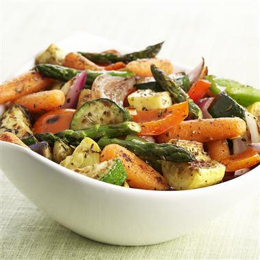
(이건 샐러드가 아닙니다. 베지터블입니다.)
저 위 소설 속에서 샤프가 마시던 'cold' tea도 비슷한 맥락으로 해석을 해야 합니다. 즉 이는 '차갑게 식힌 홍차'가 아니라, 그냥 '식은 홍차'라는 뜻입니다. 이 샤프 시리즈를 읽다보면 흔히 나오는 음식이 'cold chicken'이나 'cold beef' 같은 것들이 있는데, 이것들도 일부러 차갑게 식혔다는 뜻이 아니라, 원래는 뜨거웠지만 식어버린 음식을 뜻합니다. 지금 저 소설 속의 상황을 보면 샤프는 말을 타고 최전선에 나가 정찰을 하고 있거든요. 저 상황에서 우아하게 뜨거운 차를 마실 여유는 없는 것이지요. 그래서 그냥 뜨거운 차를 수통에 넣어왔으나, 그냥 식어버린 것입니다.
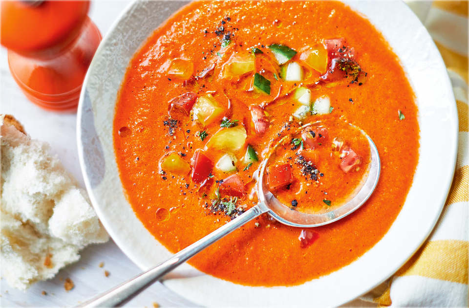
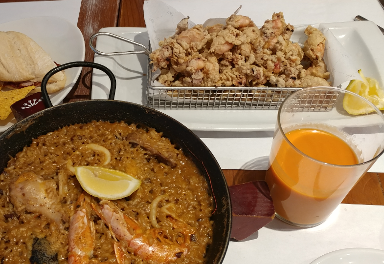
(물론 일부러 차갑게 서빙하는 고기 요리나 수프도 있긴 합니다. 사진은 대표적인 스페인식 토마토 수프인 가스파초 Gazpacho인데, 차갑게 먹는 수프입니다. 스페인에 여행 갔을 때 꼭 먹어봐야지 하고 벼르다가 어느 식당에서 파는 것을 보고 반가운 마음에 시켰는데, 저는 윗 사진 같은 것을 기대했는데 어이없게도 아래 사진처럼 플라스틱 컵에 주더군요 ! 맛은 뭐 그냥그냥 그랬습니다.)
사실 대표적인 차가운 음료가 있기는 했습니다. 바로 와인과 맥주지요. 좀더 서민적인 찬 음료로는 스몰 비어(Small Beer)도 있었습니다. 하지만 맥주는 주로 영국이나 독일 등 북부 유럽에서나 많이 마시던 술이었고, 또 와인은 그냥 더위를 식히려고 마시기에는 다소 알코올 농도가 높다는 단점이 있었습니다. 게다가 와인은 가격이 좀 부담이 된다는 문제도 있었지요.
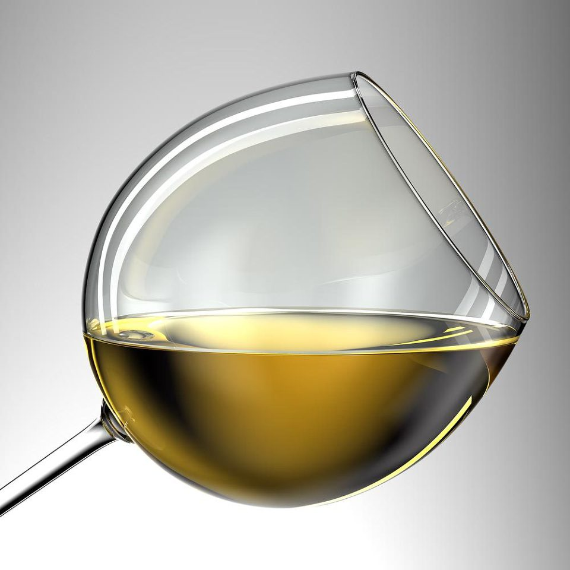
(화이트 와인은 차게 마신다고는 하지만, 그래도 더위 식히려고 마시기에는 알코올이 좀 센 편이지요 ?)
이런 문제를 해결하는 아주 좋은 음료수가 있긴 했습니다. 더운 중동지방에서는 일찍부터 셔벳을 마셨고 17~18세기 경부터 유럽에도 이 음료가 일부 전해지기 시작했습니다. 이 셔벳(sherbet)이라는 단어의 어원은 중세 아랍어인 sharâb 으로서, 뜻은 그냥 '마실 것(drink)'입니다. 이것이 약간 변형되어 shabât가 되면서 무알콜성 음료수를 뜻하게 되면서, 인도와 페르시아 등지로 펴져 나가면서 sharbat가 되었고, 투르크어에서는 sherbet으로 불리다가, 그 발음 그대로 영어의 sherbet이 된 것입니다. 프랑스어로는 sorbet(소르베)이라고 전해졌지요. 한마디로, 저 위 소설 속에 묘사된 것처럼, 셔벳은 중동의 음료입니다. 더운 지방에서는 뭔가 차갑고 시원한 것이 환영 받기 마련입니다. 게다가 당시 이집트나 투르크 등은 이슬람 국가로서, 알콜성 음료가 (적어도 겉으로는) 엄격하게 금지되어 있었지요. 그래서 다른 종류의 음료, 즉 차나 커피 같은 것들이 발달하게 되었습니다. 그 중의 하나가 바로 셔벳입니다. 당시 중동에서 마시던 셔벳에는 우유 등이 전혀 들어가 있지 않았습니다. 한마디로 말하면 그냥 과일 쥬스 정도라고 보시면 되겠습니다. 설탕물에 과일즙을 넣고 꽃잎, 허브 등의 추출액으로 향을 더한 마실 것이 바로 셔벳입니다. 당연히 시원하게 만들어서 마셨지요.
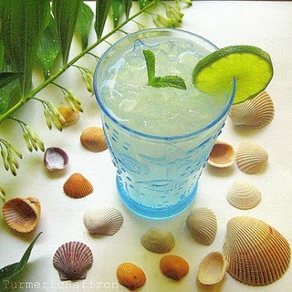
(라임 사르밧, 즉 라임 셔벳입니다.)
중동 출신의 셔벳 말고도, 유럽에서 시작된 차가운 음료가 있지요. 바로 상그리아(sangria)입니다. 역시 추운 북부 유럽이 아니라, 유럽에서는 더운 지방에 속하는 스페인이 원산지입니다.
Blue at the mizzen by Patrick O'Brian (배경: 1815년 지브랄타 영국 해군 기지) ---------
잭은 가끔씩 병사들의 경례를 받으며 조용한 광장을 가로질러 걸었다. (비록 먼 곳에는 아직 화재가 타오르고 있었고 폭도들의 소음이라기보다는 먼 곳의 천둥소리 같은 것이 들려오고는 있었지만) 고맙게도 이제 지브랄타에 질서가 강림한 것 같았다. 게다가 측량관 사무실의 몇 명의 문지기와 하급 서기들에 따르면 지난 3시간 동안은 상급 관리들이 아무도 건물에 나타나지 않았다니, 거의 완벽했다. 병원도 아주 질서정연한 모습이었다. 잭은 병원 바깥의 벤치에 앉아 차갑게 식힌(iced) 와인과 오렌지 쥬스, 레몬 쥬스를 섞은 음료를 빨대로 마시며 대각성 (Arcturus)이 점점 더 뚜렷해지는 것을 지켜보았다.
--------------------------------------------------
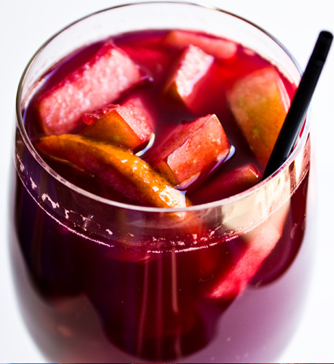
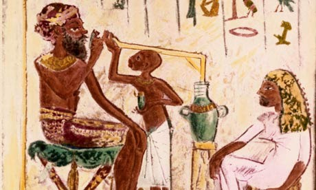
(빨대로 음료를 빨아마시는 잭의 모습이 조금 생소하십니까 ? 사실 저시대의 밀짚 빨대는 그다지 낯선 물건이 아닙니다. 기원전 4세기의 그리스의 장군이던 크세노폰의 기록에도, 맥주를 밀짚 빨대로 빨아마시는 모습이 기록되어 있으니까요.)
여기서 말하는 와인과 오렌지 쥬스, 레몬 쥬스를 섞은 찬 음료가 바로 상그리아입니다. 지금도 스페인 등지에서 매우 즐겨 마시는 알코올성 음료인 상그리아는 사실 우리에겐 잘 알려지지 않은 단어인데요, 이유가 미국에서 별로 인기가 없는 음료라서 그렇습니다. 유럽에서는 17세기 이후로 꽤 인기있는 음료여서 파티, 특히 여름철 파티에서 자주 제공되었고 제인 오스틴의 소설 '오만과 편견' 그리고 '엠마' 등에서도 클라레 펀치(Claret Cup Punch) 라는 이름으로 등장합니다. 클라레 펀치라는 이름으로 불리는 이유는 이 음료가 주로 클라레 와인, 그러니까 보르도 (Bourdeaux)산 레드 와인으로 만들어졌기 때문인데, 사실 뭐 꼭 보르도산 와인으로 만들어야 하는 것도 아니고, 화이트 와인으로도 만들었습니다. 물론 오렌지나 레몬 쥬스 뿐만 아니라 라즈베리나 블루베리, 사과 등의 과일을 넣기도 했고요.
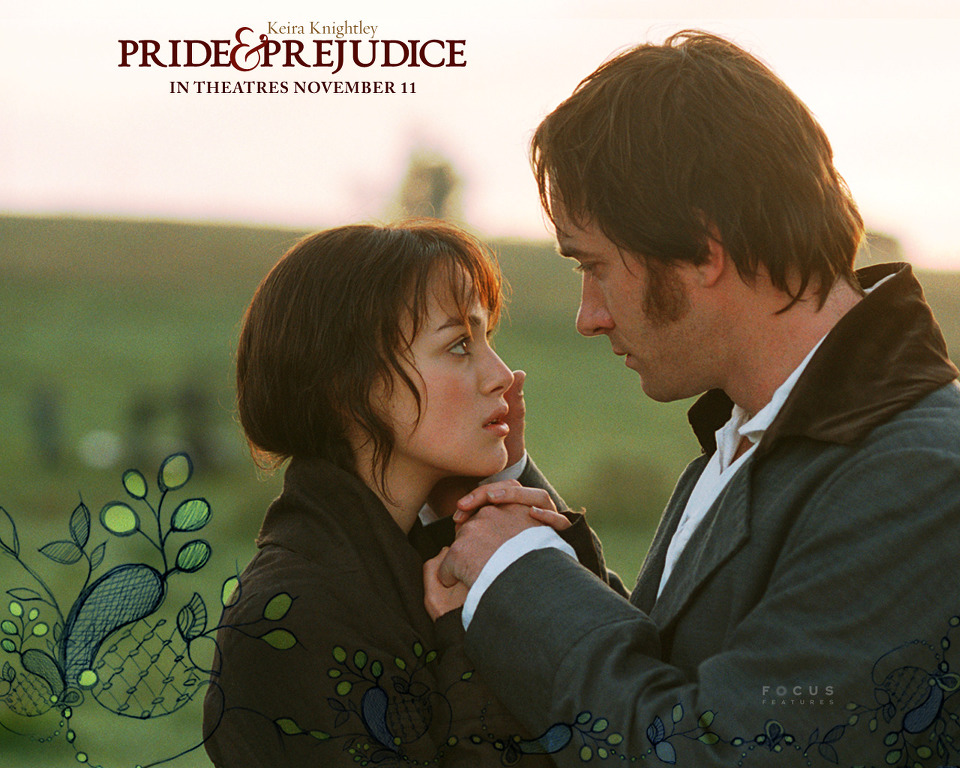
(솔까말 제인 오스틴 소설은 별로 공감도 가지 않고 재미도 없다고 저는 생각합니다.)
위에서 보면 이 상그리아에 얼음을 넣었다(iced)고 되어 있는데요, 냉장고도 없던 당시에도 과연 여름철에 얼음을 구할 수 있었을까요 ? 사실 있었습니다. Ice house라고 해서, 우리나라 석빙고 같은 얼음 저장고가 꽤 많았습니다. 페르시아에서는 기원전 4세기부터, 영국에서는 약 17세기부터 이런 ice house가 건설되기 시작했지요. 물론 이런 것은 상당히 많은 비용이 들었고 양도 많지 않았으므로 여름철 얼음은 상당히 귀한 물건이었습니다. 우리나라도 조선 시대에 임금이 여름철에 대신들에게 얼음을 하사하기도 할 정도로 귀한 물건이었지요. 하지만 19세기 초반에 들어서면서는 이런 얼음 산업이 꽤 발전하면서 이런 사업을 전문으로 하는 업자도 생길 정도였다고 합니다.
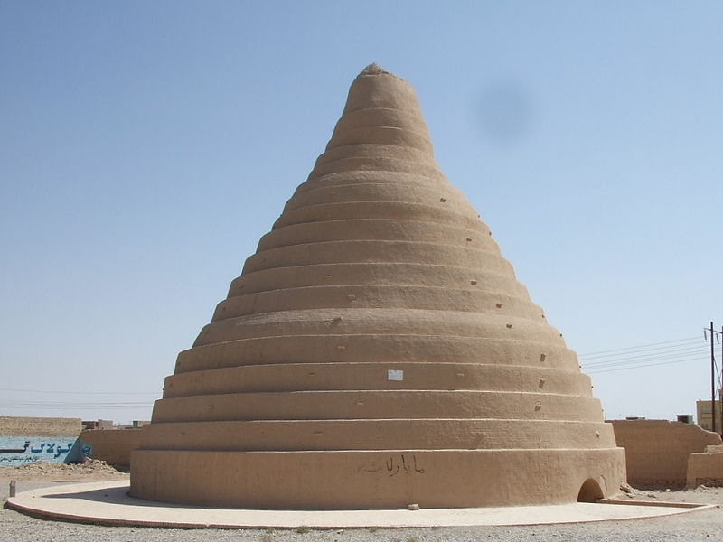
(Yazd 지방에 아직도 서있는 yakh-chāl 입니다. 이 yakh-chāl은 겨울철 인근 높은 산에서 가져온 얼음을 보관하기 위해 만든 구조물입니다. 기본적으로 얼음은 땅 밑에 구덩이를 파고 거기에 저장하되, 그 위에는 진흙과 모래, 계란 흰자위, 석회, 염소털 등 희안한 재료를 섞어만든 sārooj 라는 특수 단열재 벽돌로 원뿔형 탑을 만들어, 그 밑에 있는 얼음이 녹지 않도록 단열을 하고, 또 바람의 힘으로 조금이라도 온도를 낮추는 구조를 가지고 있었습니다. 잘 났다는 앵글로 색슨들이 17세기부터 짓기 시작한 것을, 아이큐도 낮고 인종적으로 열등하다는 이란 사람들은 기원전 4세기부터 지었습니다.)
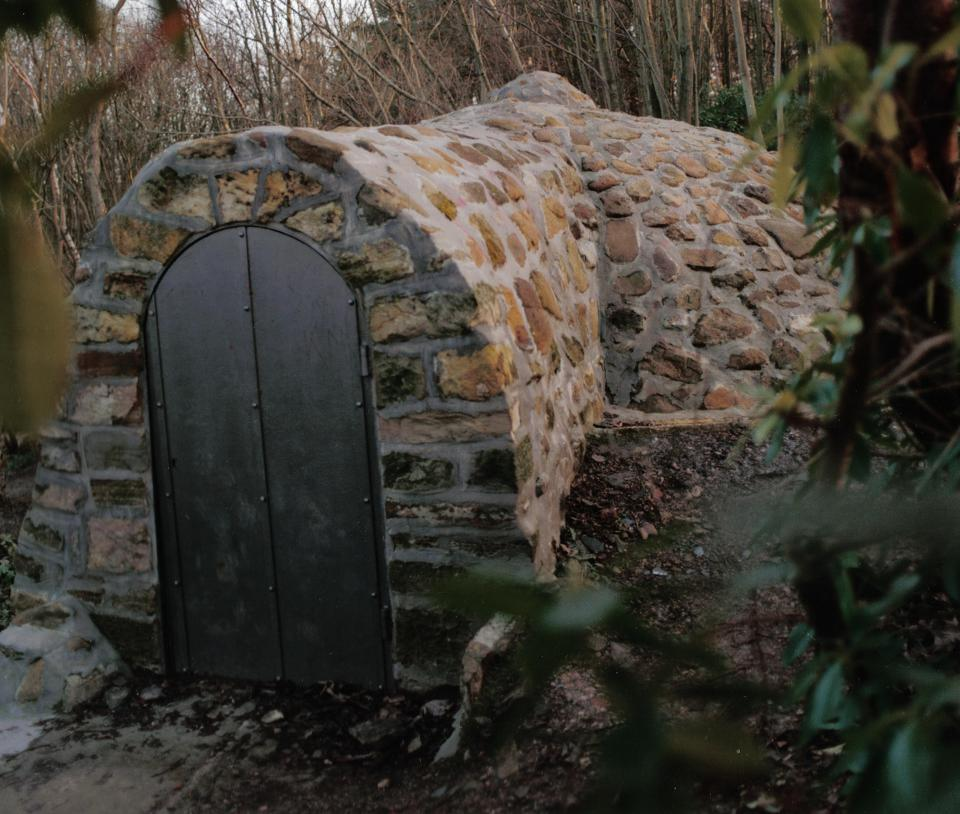
(스코틀랜드에 있는 ice house의 모습입니다.)
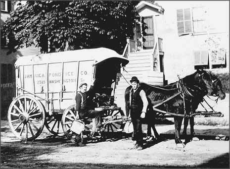
(1825년에 미국에서 문을 열어 냉장고의 시대가 오기 전까지 영업을 했던 Jamaica Pond Ice Company의 위엄)
하지만 저 위 소설의 배경인 19세기 초반, 그것도 스페인 반도 남쪽 끝인 지브랄타에서는 윗 장면의 배경인 6~7월달에 얼음을 구할 방법이 전혀 없었습니다. 설마 군사 기지인 지브랄타에서 ice house를 지어놓고 얼음을 저장하고 있지도 않았을테니까요. 이건 제 짐작입니다만, cold라는 단어는 원래는 뜨거운 것이 식은 것을 뜻하는 것이고, 일부러 더 차갑게 식힌 것은 iced라고 부르는 것 아닌지 모르겠어요. 생각해보면 미군 식당에 항상 준비되어 있던 음료가 바로 콜라 같은 탄산음료와 함께, 뜻 밖에도 몸에 좋은 아이스 티 (iced tea)였습니다. 그러나 그 아이스 티를 담은 투명 용기 (fountain) 속을 보면 정작 얼음은 안 들어있었습니다. 그런데도 아이스 티라고 불렀지요. 같은 맥락인 것 같습니다.
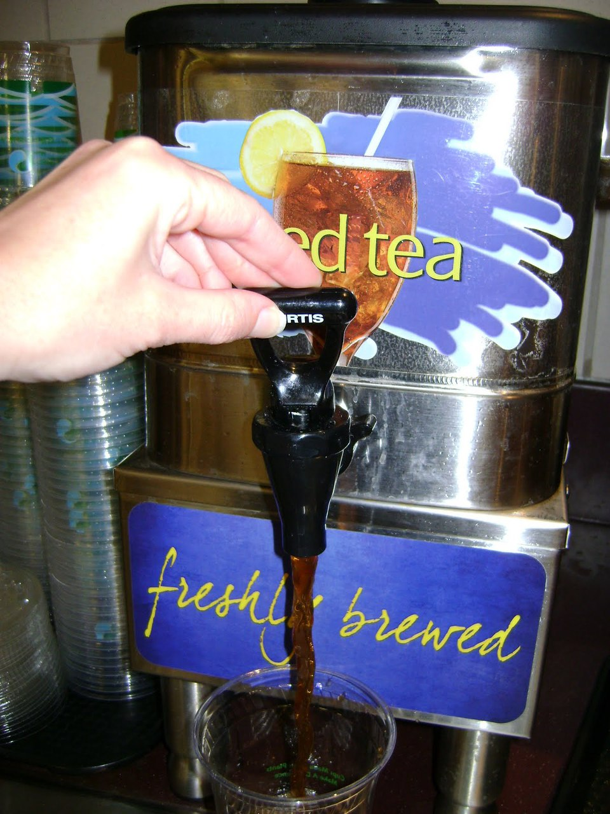
(정말 뜻 밖에도, 미군 식당의 아이스티는 달지 않더군요 ! 그래서 저는 콜라만 마셨지요.)
이야기가 나온 김에 아이스 티 이야기로 끝을 마치지요. 원래 차는 뜨거운 것이었습니다. 전해지는 이야기로는 미국에서 1904년 세인트 루이스의 세계 박람회 때, 블레친든(Richard Blechynden)이라는 영국인 홍차 상인이 더운 날씨로 인해 뜨거운 홍차가 잘 팔리지 않자, 얼음을 넣어 차갑게 했더니 불티나듯 팔린 것에서 시작된 것이 아이스 티라고 합니다. 하지만 이건 사실이 아닙니다. 이미 19세기 중반에 미국의 가정용 요리책에 티 펀치 (tea punch)라는 이름의 아이스 티 요리법이 많이 소개되어 있습니다. 이 초기 아이스 티의 특징은 2가지인데, 하나는 홍차가 아닌 녹차를 베이스로 한다는 것과, 나머지 하나는 엄청나게 많은 설탕을 써서 달게 만든다는 점입니다. 원래 미국에서는 2차 세계대전 전까지만 해도, (원래 차보다는 커피를 많이 마시긴 했지만) 홍차만큼 녹차도 많이 마셨다고 하네요. 그런데 2차 세계대전 때 중국과 일본에서 수입해오던 녹차 공급이 끊기면서, 인도에서 들여오는 홍차가 주종을 이루게 되었다고 합니다.
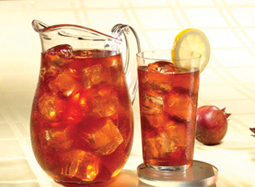
방금 말씀드린 것처럼, 사실 미국은 커피를 많이 소비하지만 녹차건 홍차건 사실 차는 잘 마시지 않습니다. 그런데, 희한하게도 아이스티는 정말 많이 마신다고 합니다. 미국에서 소비되는 차의 80%는 아이스티 형태로 마신다고 하니까, 정말 대단한 불균형이지요. (제가 미군 식당에서 본 아이스티도 이런 연유로 식당의 터줏대감이 되었던 모양입니다.) 이런 현상은 남부에서 특히 더한데, 특히 남부의 아이스티는 정말 끔찍할 정도로 달게 만든다고 합니다. 미국 뿐만 아니라 유럽에서도 아이스티는 무척 인기라서 많이들 마시는데, 정작 차의 본고장이라고 할 수 있는 영국과 중국에서는 아직도 (다른 나라에 비하면) 아이스티의 인기는 그다지 많지 않다고 합니다. 우리나라도 아이스티는 인기가 별로지요 ?
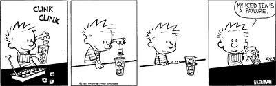
(Bill Waterson의 Calvin & Hobbes 의 한 장면입니다. 이 만화에서는 이렇게 영어 단어를 가지고 말장난하는 장면이 많이 나오지요.)